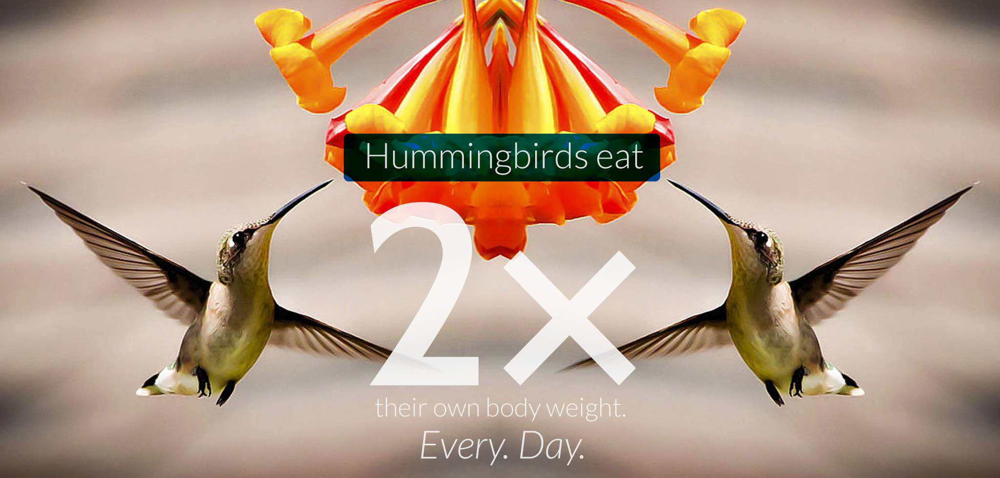

Hungry Hungry Hummers

Do You Eat Like a Bird? Not Likely.
Most of a hummingbird’s diet consists of nectar and insects. Eating twice their body weight is an impressive feat. What if you drank 2 times your weight in high calorie, sugar-laden soda every day? Enter your weight below to find out how much you’d have to drink.